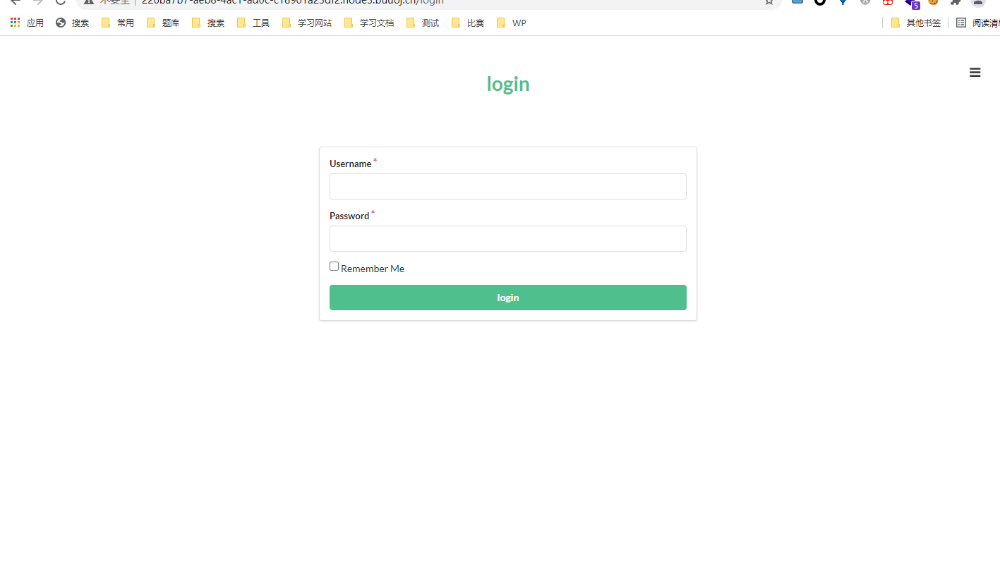

[HCTF 2018]admin
本文参考链接：
https://blog.csdn.net/weixin_44677409/article/details/100733581
前言
这是一道几乎被做烂的题，BUUCTF中达到了3400解
但我觉得它的审计部分很经典，解多单纯的只是因为非预期

刚打开时，我以为这事一道二次注入的问题，结果注了好久都进不去
直到我在改密处找到了源码的地址
代码审计
dump下源码后，发现他几乎给了我们整个网站
以python为基础的代码审计
能怎么办，看呗，结果看了半个小时只找到几个疑似点
然后看了wp，我让深深怀疑这种题为什么会有3500解
wp给出了三种思路
编码伪造
这大概是最容易看出，也是最好想到的操作
仔细看代码，会发现题目在注册，登录，改密中都对username进行了这个操作
追踪过去，看看这个函数具体是什么
将输入的username交给了nodeprep.prepare函数处理，看看这个函数是什么
往上看，可以直到此函数在这个库中
在这里可以看到版本的信息，这里是10版，而官网已经到了21.2.0，版本差距极大
查看一下官方文档的说明，发现该库已经被弃用
时间太过久远，源码找不到，也不想下了（需要python2）
这里直接粘贴参加链接的

简单说，这里的机制让我们注册，登录，改密时都是以小写的用户名进行，即使我们注册大写
这个函数的编码过程在大写字母上还存在一层，ᴬᴰᴹᴵᴺ，函数会把它转化为ADMIN
假如我们注册ᴬᴰᴹᴵᴺ用户，然后在用ᴬᴰᴹᴵᴺ用户登录，因为在login函数里使用了一次nodeprep.prepare函数，因此我们登录上去看到的用户名为ADMIN，此时我们再修改密码，又调用了一次nodeprep.prepare函数将name转换为admin，然后我们就可以改掉admin的密码，最后利用admin账号登录即可拿到flag。
flag{c66a73bf-6a5f-4772-ba1f-00fa5d5e7f20}
flask session 伪造
flask中session是存储在客户端cookie中的，也就是存储在本地。flask仅仅对数据进行了签名。众所周知的是，签名的作用是防篡改，而无法防止被读取。而flask并没有提供加密操作，所以其session的全部内容都是可以在客户端读取的，这就可能造成一些安全问题。
这里直接读取cookie处的session，拿p师傅的脚本解密
{'_fresh': True, '_id': b'de1a76fa41b201f9691b499189fc182a9ada3c2670f72a06694707d999c69a4877e2c0bece2a6598d30bdfa836af05959fee422f1574fbb1e1f2484f2cac79c3', 'csrf_token': b'7e73a86d3a5d5bf8e0c46793afe6bdf67f0af005', 'image': b'KsAf', 'name': 'admin', 'user_id': '1'}
这里我已经以admin身份登录了，所以拿到了admin的session
这里将session中的name小写，和username比较，相同则登录，那么我们就可以将name字段改为admin，然后加密
加密脚本也用现成的
https://github.com/noraj/flask-session-cookie-manager
.eJw9kEGPgjAQRv_KZs4chLoXEw8SoFmSDsEUyPRiWEWhUDcBDVrjf9-um3idl7y8bx6wO47N1MLqMl4bD3bdAVYP-PiGFWRy26MuBxGFRmmyqIsbShGg3g5o2y6TtCC5X6ApjZAnJmzYqUoNJMteycSgjhlauqlK-EoWjGSiFf9aKrmxKPcsk9giLxboblkkHBd3pVNNJvaR5zfBBUNNTFT5kozqSLeup_gk58QontFu7hQIm_F4DU8P9tN43F1--ub8noBBwUQQL9Hk9i8Lq9RkvJjJ5gHa3pLLRZP2bh5TOmyV3syYr1-6ztSn5m0iliR0-ifn2jgA9cF0Z_DgOjXj62_g-_D8BYRPbTo.YNGaow.2-AM-dVZnD6rMuQ9wuD6tx2USOM
成功
条件竞争
思路大概没问题，但….没有人将它复现成功（起码我没找到）
直接贴思路
参考链接：
https://www.jianshu.com/p/f92311564ad0
仔细观察源码，可以发现login函数和change函数都在没有完全check身份的情况下，执行了session有关的赋值

我们可以这样设想，一个进程以正常账号一直依次进行登录、改密码操作，另一个进程同时一直依次进行注销、以admin用户名加进程1更改的新密码进行登录。就有可能出现当进程1进行到改密码函数时，进程2进行到登录操作，这个时候进程1需要从session中取出name，而进程2此时把session[‘name’]改成了admin。
所以就可以编写脚本进行条件竞争，条件竞争结束的标志为进程2登录操作成功，即重定向到/index。
非预期：username覆盖
注测用户名admin%20 便可以覆盖原来的admin用户
然后登录即可拿到flag
非预期就挺无趣的，但前三种解法值得学习